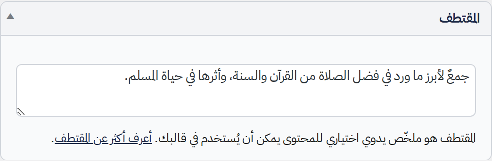
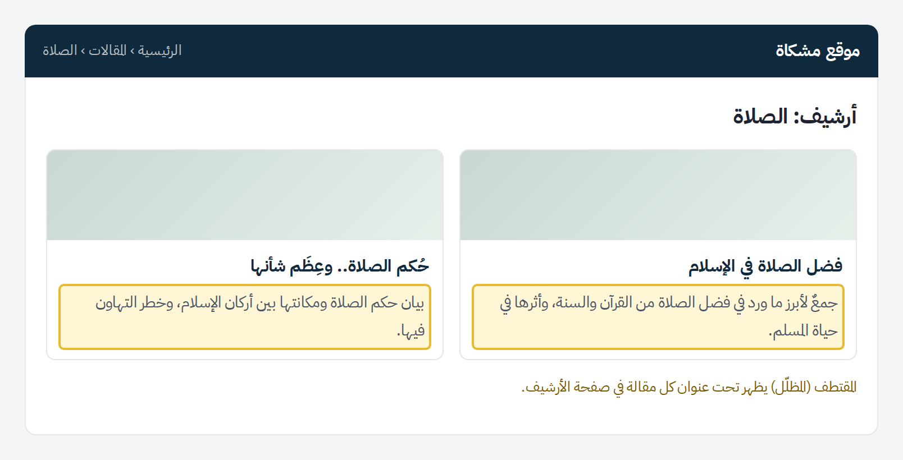
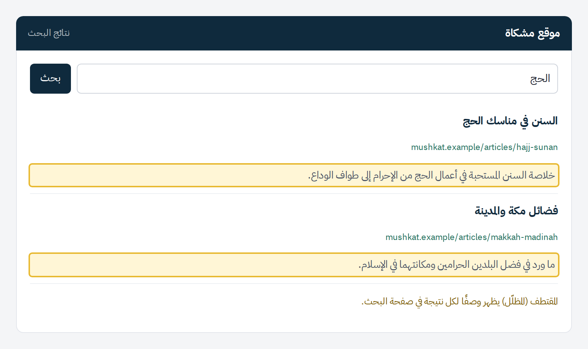

ما هو المقتطف؟
المقتطف نص اختياري يرتبط بالمقالة، ويُستخدم في أغلب الأحيان ملخصًا للمقالة.

بحسب القالب الذي يستخدمه موقعك، يمكن أن تظهر المقتطفات في صفحات مختلفة (نتائج البحث، والأرشيف، وغيرها).


إذا كان المقتطف فارغًا، يُنشأ مقتطف تلقائيًا من أول 55 كلمة في المقالة.